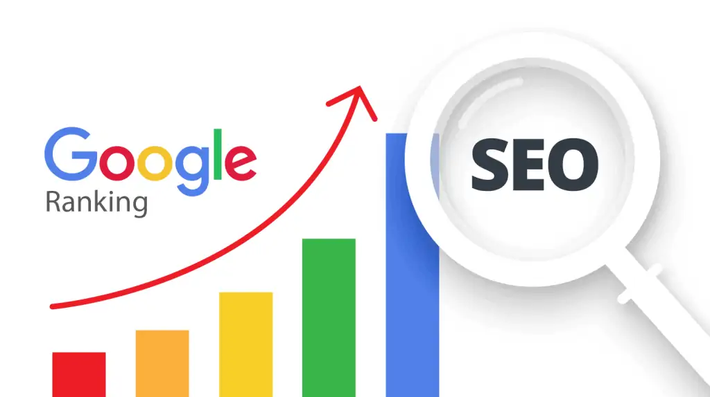

fungsi tujuan manfaat jasa seo marketing on page dan off page untuk bisnis
Apa itu SEO?
SEO, atau Search Engine Optimization, adalah serangkaian upaya yang dilakukan untuk menarik orang untuk mengunjungi situs website Anda
Tujuan SEO
Tujuan dari SEO adalah untuk mendatangkan orang ke situs web Anda, dengan semakin banyak orang yang mengunjungi website Anda maka semakin besar kemungkinan orang untuk membeli atau menggunakan jasa / layanan yang Anda sediakan
Kenapa SEO Penting?
Karena SEO menjadi cara terbaik untuk mendatangkan orang mengunjungi situs web Anda dibanding dengan Social Media dan Iklan Berbayar
Dari data yang dikumpulkan oleh Growthbadger Apa yang Diceritakan oleh 3,25 Miliar Kunjungan Situs Web Tentang Sumber Lalu Lintas Teratas di Internet, menyimpulkan bahwa:
1/ Penelusuran adalah satu-satunya sumber lalu lintas online terbesar, yang mendorong lebih dari 50% lalu lintas web sebagian besar industri
2/ Google menghasilkan lalu lintas 8 kali lebih banyak daripada gabungan semua jaringan media sosial
3/ Rata-rata website teratas mendapatkan 66,47% lalu lintasnya dari pencarian, dimana 99,77% adalah organik dan hanya 0,23% yang berbayar.
Manfaat SEO
Adapun manfaat yang akan Anda dapatkan dari mengoptimalkan SEO adalah sebagai berikut:
- Dibandingkan dengan metode pemasaran lainnya, SEO sering memberikan ROI yang lebih tinggi karena Anda menarik pengunjung yang sudah mencari produk atau layanan yang Anda tawarkan
- Semakin sering bisnis Anda muncul di hasil pencarian, semakin banyak orang yang akan mengenal merek Anda. Ini meningkatkan kesadaran merek secara keseluruhan
- Situs web yang muncul di hasil pencarian atas dianggap lebih kredibel dan dapat dipercaya. Ini meningkatkan reputasi bisnis Anda di mata pelanggan potensial
- Dengan strategi SEO yang baik, Anda bisa mendapatkan keunggulan kompetitif atas bisnis lain di industri Anda yang mungkin belum memanfaatkan SEO secara efektif
- SEO membantu situs web Anda muncul di halaman pertama hasil mesin pencari seperti Google. Ini sangat penting karena sebagian besar pengguna jarang melihat halaman kedua hasil pencarian
- Dengan meningkatkan peringkat di mesin pencari, situs web Anda akan mendapatkan lebih banyak pengunjung tanpa perlu mengeluarkan biaya tambahan untuk iklan berbayar. Lalu lintas organik ini lebih berkelanjutan dan seringkali lebih terlibat
- SEO tidak hanya tentang mesin pencari tetapi juga tentang pengguna. Dengan mengoptimalkan situs web Anda, Anda akan meningkatkan kecepatan halaman, navigasi, dan kegunaan keseluruhan, yang pada gilirannya meningkatkan pengalaman pengguna
- Untuk bisnis lokal, SEO lokal membantu dalam menarik pelanggan di sekitar lokasi bisnis Anda. Ini penting untuk bisnis yang ingin menjangkau audiens lokal
- Hasil dari upaya SEO seringkali berkelanjutan dan dapat bertahan lama, memberikan manfaat jangka panjang untuk visibilitas online dan lalu lintas situs web Anda
- SEO menyediakan banyak data dan metrik yang dapat digunakan untuk memahami perilaku pengguna, preferensi, dan tren pasar, yang dapat membantu dalam pengambilan keputusan bisnis
On-Page dan Off-Page SEO
Secara besar SEO dibagi menjadi dua bagian besar yaitu On-Page SEO dan Off-Page SEO
On-Page SEO
On-page SEO adalah proses mengoptimalkan elemen-elemen di dalam situs web untuk meningkatkan peringkatnya di mesin pencari dan menarik lebih banyak lalu lintas organik
Komponen utama dari on-page SEO:
1/ Buat konten yang informatif, relevan, dan memenuhi kebutuhan pengguna. Gunakan kata kunci yang tepat dalam konten, termasuk variasi dan sinonimnya, untuk mencerminkan topik yang dibahas
2/ Memasukkan kata kunci utama di awal tag judul. Buat judul yang menarik perhatian dan menggambarkan isi halaman dengan akurat. Menjaga panjang tag judul antara 50-60 karakter agar tidak terpotong di hasil pencarian
3/ Menulis meta deskripsi yang memberikan ringkasan singkat tentang isi halaman. Sertakan kata kunci yang relevan untuk menarik perhatian pengguna. Ajakan bertindak untuk meningkatkan klik
4/ Gunakan tag heading untuk membagi konten menjadi bagian yang terstruktur. Sertakan kata kunci utama di tag H1 dan kata kunci terkait di tag H2 dan H3
5/ Buat URL yang deskriptif, singkat, dan mengandung kata kunci.Pastikan URL mencerminkan struktur hierarki situs
6/ Optimasi Gambar. Gunakan tag Alt untuk Menambahkan deskripsi alternatif pada gambar menggunakan kata kunci yang relevan agar situs web Anda dapat tampil di Google Images Search. Optimasi gambar untuk mempercepat waktu muat halaman
7/ Sertakan tautan internal yang mengarahkan pengguna ke halaman terkait lainnya di situs web
8/ Pastikan situs web dapat diakses dan digunakan dengan baik di berbagai perangkat, termasuk ponsel dan tablet
9/ Perbarui konten secara berkala untuk menjaga relevansi dan menarik pengunjung kembali Sertakan konten terbaru yang terkait dengan tren dan berita terkini di industri
Dengan mengoptimalkan elemen-elemen di atas secara konsisten, on-page SEO dapat membantu meningkatkan peringkat situs web di mesin pencari, meningkatkan lalu lintas organik, dan meningkatkan pengalaman pengguna secara keseluruhan
Off-Page SEO
Off-page SEO adalah serangkaian tindakan yang dilakukan di luar situs web Anda untuk meningkatkan peringkat situs di mesin pencari dan meningkatkan visibilitas serta otoritas situs
Berikut adalah beberapa elemen kunci dari off-page SEO:
1/ Backlink Building (Pembangunan Tautan Balik). Dapatkan tautan dari situs web yang memiliki otoritas tinggi dan relevan dengan niche Anda
2/ Bagikan konten Anda di platform media sosial untuk menjangkau audiens yang lebih luas.
Berinteraksi dengan pengikut dan membangun komunitas yang aktif untuk meningkatkan reputasi dan otoritas merek
3/ Content Marketing. Buat dan mendistribusikan infografis yang menarik dan informatif yang dapat di-embed oleh situs lain dengan tautan kembali ke situs Anda. Gunakan platform video seperti youtube untuk menjangkau audiens baru dan menyertakan tautan ke situs Anda dalam deskripsi video. Buat konten mendalam yang dapat diunduh yang mengarahkan pengguna kembali ke situs Anda
4/ Bergabung dengan forum dan komunitas online yang relevan dengan industri Anda dan berkontribusi dengan konten yang berharga. Sertakan tautan ke situs web Anda dalam tanda tangan forum jika diizinkan
5/ Optimalkan profil Google My Business Anda untuk meningkatkan visibilitas dalam pencarian lokal. Dorong pelanggan untuk meninggalkan ulasan positif di situs ulasan dan profil Google My Business Anda
6/ Bekerja sama dengan influencer dalam industri Anda untuk memperluas jangkauan dan mendapatkan tautan balik yang berharga. Meminta influencer untuk mereview produk atau layanan Anda dan membagikan pengalamannya dengan audiens mereka
7/ Press Releases. Kirim siaran pers ke media untuk mendapatkan liputan dan tautan balik dari situs berita. Sebarkan informasi penting tentang acara atau pengembangan produk baru melalui platform distribusi siaran pers
Dengan fokus pada strategi off-page SEO ini, Anda dapat meningkatkan otoritas dan visibilitas situs web Anda, yang pada akhirnya membantu dalam peningkatan peringkat di mesin pencari dan menarik lebih banyak lalu lintas organik